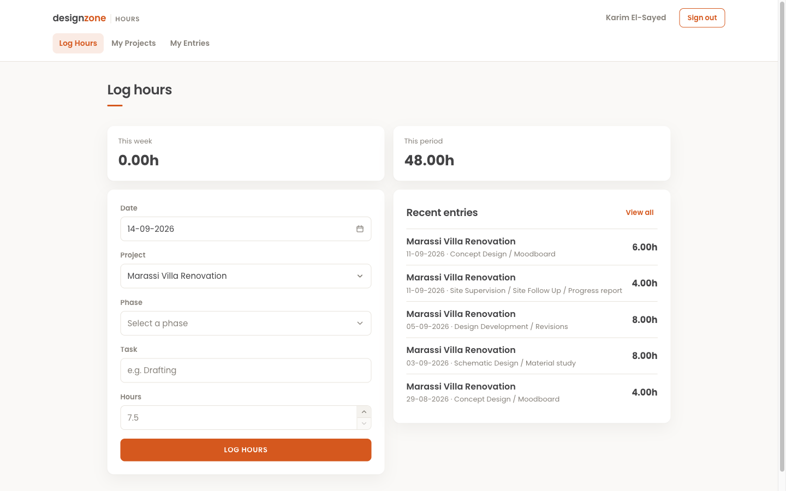
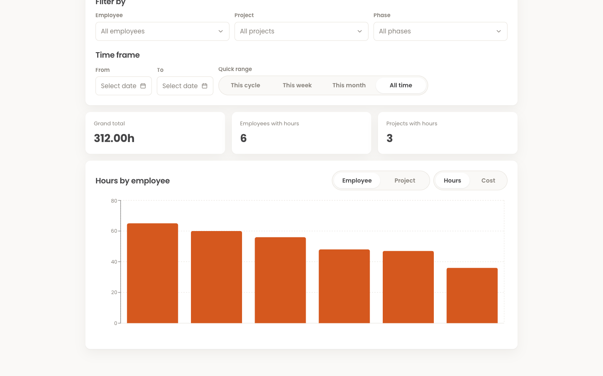
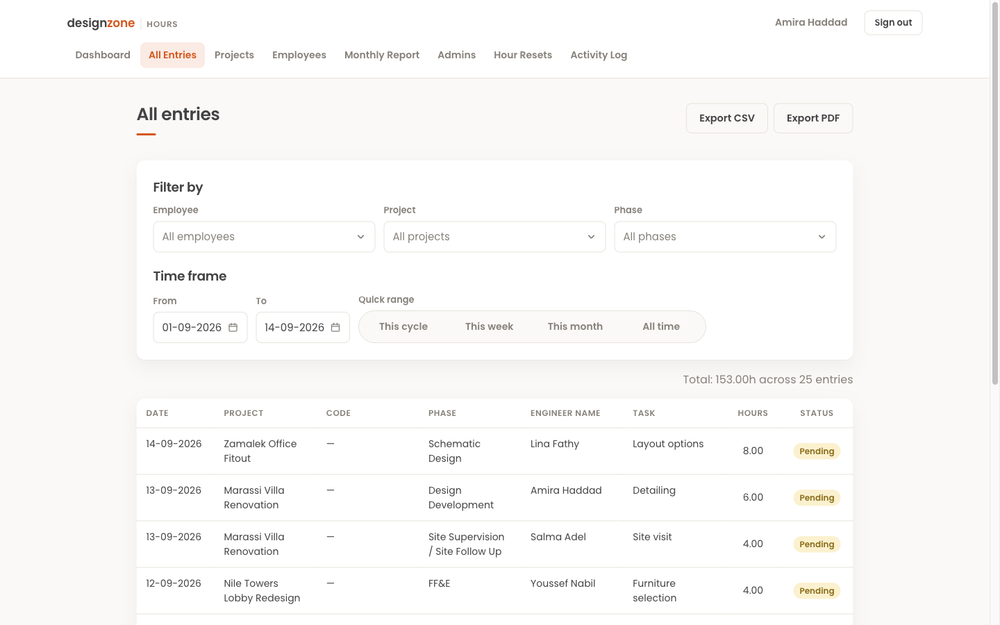
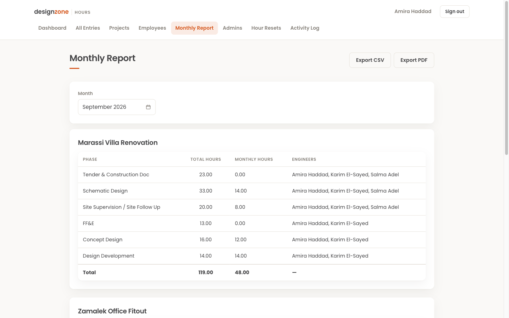
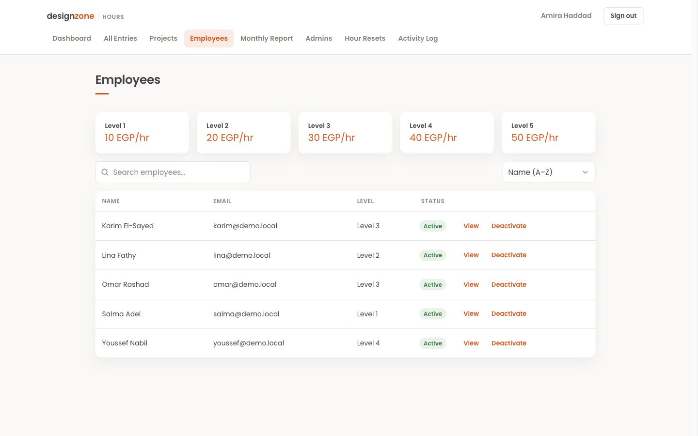
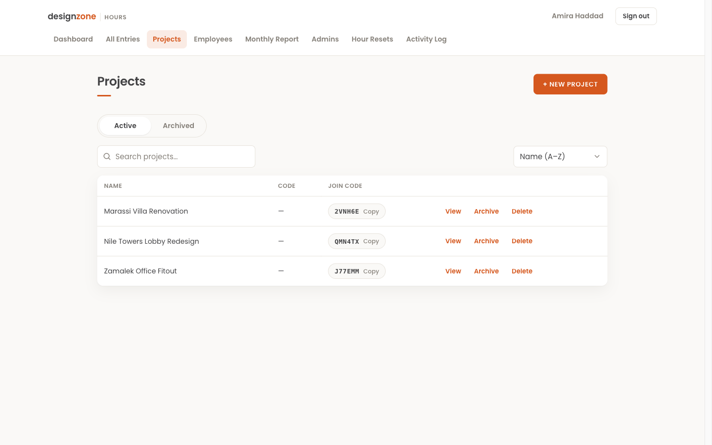

This started when my aunt, Soha Omar, who co-founded a design firm in Egypt called Design Zone, came to me with a problem. Her firm had no real way to track how many hours each employee spent on each project, so payroll and reporting were being done by hand in Excel. Every month someone had to chase people for their hours, copy numbers between spreadsheets, and hope nothing got typed wrong. It was slow, easy to mess up, and gave the firm almost no visibility into where time and money were actually going. When I looked around, I couldn't find a single product built for this in Egypt.
So I built a web app that replaces the whole spreadsheet routine. It has two sides. Employees get a simple screen where they log their hours against a specific project, design phase, and task, and immediately see their totals for the week and the pay period plus a feed of their recent entries. Admins get everything above that: a dashboard that breaks hours and cost down by employee or by project with date-range and phase filters, a full entries view where they can review every logged entry, and a monthly report that rolls hours up by project and phase — the exact thing they used to build by hand.
Payroll is built in. Each employee is assigned a pay level with an hourly rate, so the moment hours are logged the app already knows what they cost, and admins can flip any view between hours and money. Projects use join codes so employees can add themselves to the right project, and admins can archive old ones, manage pay levels, reset hour periods, follow an activity log, and export any report to CSV or PDF. The goal was that nobody at the firm ever has to open Excel for this again.
I showed it to my aunt and her team at Design Zone, and they decided to buy it from me. They told me they were impressed with how well it fit the way an actual design firm works, and that nothing like it existed in Egypt. It's now their real tool for tracking hours and payroll, running with their own projects and employees instead of the demo data shown here. It's the first thing I've built that a real company chose to pay for and put into daily use, which is easily the part I'm proudest of.